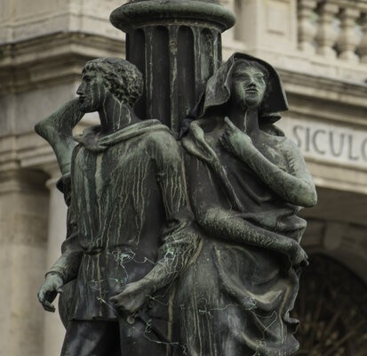
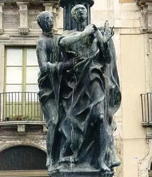
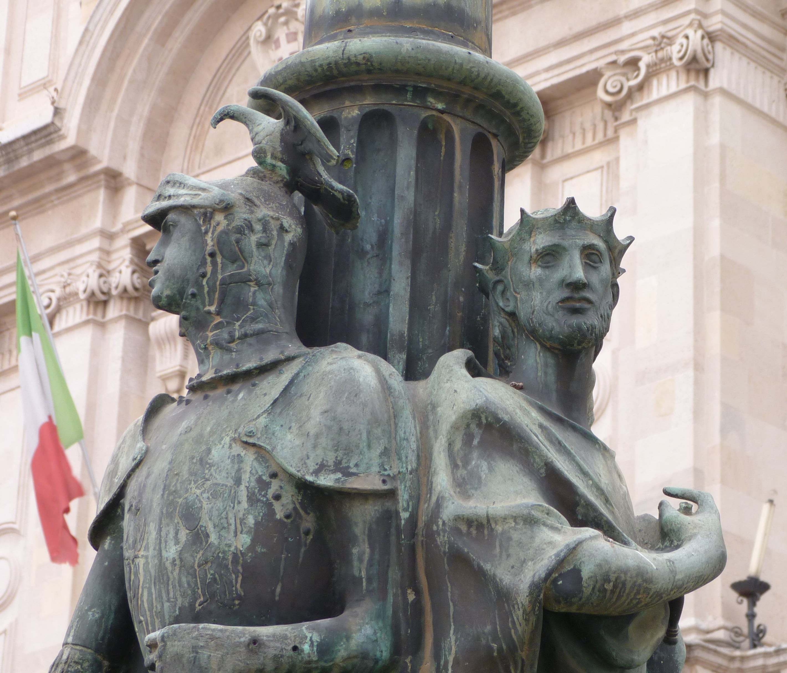
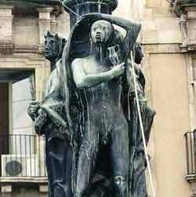

Catania
Una delle piazze più conosciute di Catania è Piazza Università caratterizzata da quattro candelabri bronzei che custodiscono le leggende più celebri della città. Ogni scultura narra un frammento di mito: la giovane Gammazita che scelse la morte nel pozzo per onore, i fratelli Pii che sfidarono la lava per salvare i genitori, il paladino Uzeta che sconfisse i giganti saraceni e il subacqueo Colapesce, prigioniero eterno sotto l'isola.
Piazza Università è una delle piazze più importanti di Catania, situata nel centro storico della città. È circondata da edifici storici e accoglie numerosi eventi culturali e sociali durante l'anno. Inoltre, la piazza è un punto di riferimento per studenti, residenti e turisti, offrendo un'atmosfera vivace e accogliente. La sua esistenza risale almeno al 1696 quando, sul lato ovest, venne edificato il palazzo dell'Università dopo le distruzioni causate dall'evento sismico del 1693. Sul lato est, di fronte al palazzo dell'Università, si trova il palazzo di San Giuliano costruito nel 1738, per i marchesi di San Giuliano. A sud della piazza sono situati il lato posteriore di palazzo degli Elefanti, sede del municipio. Mentre il lato nord ospita il palazzo Gioeni d'Angiò.


Nella piazza sono presenti quattro candelabri artistici in bronzo, realizzati nel 1957 rappresentanti quattro antiche leggende catanesi: Gammazita, i fratelli Pii Anapia e Anfinomo, il Paladino Uzeta e Colapesce e le loro avventure.
Gammazita era una giovane catanese che attirò l’ossessiva attenzione di un soldato francese di nome Droetto. Per fuggire dalle sue continue insistenze, la ragazza decise di compiere un gesto estremo gettandosi nel pozzo nei pressidel Castello Ursino, e scatenando la reazione dei cittadini catanesi, che diedero la caccia a Droetto usando la parola “CICIRI” (ceci) come test di pronuncia per trovare gli stranieri.

Contadini delle terre Etnee che, durante una violenta eruzione dell’Etna, decisero di caricarsi i genitori anziani sulle spalle per non lasciarli indietro. Nonostante il peso rallentasse la loro fuga avvenne un miracolo: la lava si divise in due parti per lasciarli passare indenni. Questo divenne nell’antichità il simbolodella “Pietas” (devozione alla famiglia), e si ritiene che abbia ispirato Virgilio per la storia di Enea che salva il padre dalle fiamme di Troia.

Uzeta era un giovane di umili origini che, grazie al suo coraggio, conquistò la fiducia di Federico II di Svevia. Egli viene ricordato per la sconfitta dei “Giganti Ursini”: creature leggendarie che abitavano la zona del Castello Ursino che prende il loro nome. questo atto di eroismo, oltre alla gloria, gli valse come premio la mano della figlia del Re, passando così da giovane povero a eroe leggendario.

Colapesce era un giovane nuotatore siciliano che amava il mare al punto di trascorrervi intere settimane. la sua fama giunse a Federico II di Svevia che decise di sfidarlo a recuperare oggetti preziosi gettati negli abissi. Durante le sue immersioni Colapesce scoprì che la Sicilia era sorretta da tre colonne e che quella situata sotto Messina era gravemente danneggiata, così decise di restare sott’acqua e sostituirsi alla colonna inclinata. Secondo la leggenda è ancora lì, e i terremoti che scuotono la zona non sono altro che i suoi movimenti quando decide di cambiare spalla per la stanchezza.


Scansiona il codice QR per raggiungere Piazza Università.